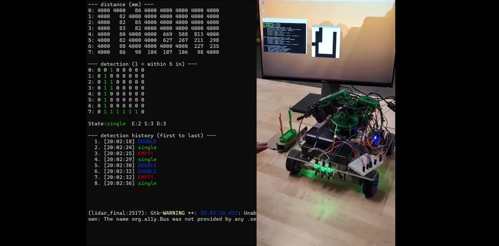

Johnson & Johnson Robotics & Controls Job Simulation
Present- Diagnosing and resolving robotic surgical-arm response delays using Python-based root cause analysis and NumPy/SciPy simulation.
Bachelor of Science, Computer Engineering
GPA 3.5 · State College · early graduation
Microchip & Embedded Systems · PSU College of Engineering
Line Following & Image Processing Robotics · PSU College of Engineering
Information & Data Management · Technip Energies, Abu Dhabi
Real-time eye-closure detection in Python/OpenCV with an escalating LED and buzzer alarm on a Raspberry Pi 4.
View project →
A Raspberry Pi 4 robot that follows crop rows and uses an 8x8 LiDAR to tell empty, single, and double plant slots apart.
View project →Robotics · Embedded C · LiDAR · ASABE Robotics Competition
A Raspberry Pi 4 robot that follows crop rows on its own and uses an 8x8 LiDAR to tell empty, single, and double plant slots apart. Built during her research assistantship at Penn State, May to July 2026.
Built for the International American Society of Agricultural and Biological Engineers (ASABE) Robotics Competition: drive down a field's crop rows without human control and produce an automated total crop count for that field.
Written in C on a Raspberry Pi 4. IR sensors give real-time feedback on the row, and the Pi drives GPIO-controlled motors to stay on track, with LED indicators showing the robot's state.
A 64-zone time-of-flight LiDAR (VL53L5CX based) streams an 8x8 distance grid every 10 ms. Frames are averaged over time to cut noise, then compared against a threshold set by calibrating on an empty slot at startup. Anything closer counts as plant. Flood-fill counts the separate blobs in the mask, and a separate camera pipeline (greyscale and binary thresholding) supports stalk detection. Because the LiDAR measures distance only, detection does not depend on color or lighting.
A real detection frame from the demo: lit cells are within 5 in of the sensor. Result: single.
A confirmation step requires a reading to hold before it counts, so noise doesn't cause double counts or misses. On a double, the camera locates the yellow plant so the robotic arm can remove it.
Multithreaded C (pthreads): one thread reads and filters LiDAR frames, a controller thread thresholds and classifies, and an LED thread drives the GPIO pins through libgpiod, with commands passed through a FIFO queue. A GTK4 window shows the live bitmap.
Computer Vision · Embedded Systems · In progress
A real-time system that watches a driver's eyes and raises an escalating alarm when they start to close, aimed at reducing highway accidents caused by drowsy or DUI-impaired driving.
Catch the moment a driver is nodding off or impaired and get their attention before it turns into a crash. The project is ongoing.
Python and OpenCV track landmarks around each eye in real time. From those points the system computes the Eye Aspect Ratio (EAR), which drops sharply when the eye closes, so it can tell an open eye from a closed one frame by frame.
EAR = (|p2 − p6| + |p3 − p5|) / (2 · |p1 − p4|). The two vertical gaps shrink as the eye closes.
The Pi's GPIO pins drive a three-stage LED alert and a buzzer to escalate the warning. The alarm has to be dismissed by hand, which proves the driver is actually alert before continuing.